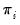
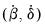
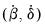

To begin, select from the menu of an EViews group or pool object, or from the menu of an individual series in a panel structured workfile. Here we show the dialog for a Group unit root test—the other dialogs differ slightly (for testing using a pool object, there is an additional field in the upper-left hand portion of the dialog where you must indicate the name of the pool series on which you wish to conduct your test; for the series object in a panel workfile, the option is not present).
If you wish to accept the default settings, simply click on OK. EViews will use the default setting, and will compute a full suite of unit root tests on the levels of the series, along with a summary of the results.
The dropdown menu at the top of the dialog is where you will choose the type of test to perform. There are six settings: “ “”, “”, “, “, “, and “, corresponding to one or more of the tests listed above. The dropdown menu labels include a brief description of the assumptions under which the tests are computed. “Common root” indicates that the tests are estimated assuming a common AR structure for all of the series; “Individual root” is used for tests which allow for different AR coefficients in each series.
We have already pointed out that the default instructs EViews to estimate the first five of the tests, where applicable, and to provide a brief summary of the results. Selecting an individual test type allows you better control over the computational method and provides additional detail on the test results.
The next two sets of radio buttons allow you to control the specification of your test equation. First, you may choose to conduct the unit root on the , , or of your series. Next, you may choose between sets of exogenous regressors to be included. You can select if you wish to include individual fixed effects, to include both fixed effects and trends, or for no regressors.
The option is present only if you are estimating a Pool or a Group unit root test. If you select this option, EViews will adjust your sample so that only observations where all series values are not missing will be included in the test equations.
If you wish to override these settings, simply enter the appropriate information. You may, for example, select a fixed, user-specified number of lags by entering a number in the field. Alternatively, you may customize the settings for automatic lag selection method. Alternative criteria for evaluating the optimal lag length may be selected via the dropdown menu (Akaike, Schwarz, Hannan-Quinn, Modified Akaike, Modified Schwarz, Modified Hannan-Quinn), and you may limit the number of lags to try in automatic selection by entering a number in the box. For the kernel based methods, you may select a kernel type from the dropdown menu (, , ), and you may specify either an automatic bandwidth selection method (, ) or user-specified fixed bandwidth.
LLC show that under the null, a modified t-statistic for the resulting

is asymptotically normally distributed
where  is the standard t
is the standard t-statistic for ,

is the estimated variance of the error term

, is the standard error of

, and:
In the general case where the lag order in Equation (42.82) may be non-zero for some cross-sections, IPS show that a properly standardized has an asymptotic standard normal distribution:
The expressions for the expected mean and variance of the ADF regression t-statistics, and , are provided by IPS for various values of

and

and differing test equation assumptions, and are not provided here.
If we define  as the p-value from any individual unit root test for cross-section

, then under the null of unit root for all

cross-sections, we have the asymptotic result that


from the individual ADF regressions, :

. EViews supports estimators for
based on kernel-based sum-of-covariances. See “Frequency Zero Spectrum Estimation” for details.
 are the autoregressive coefficients, and the errors
are the autoregressive coefficients, and the errors  are assumed to be mutually independent idiosyncratic disturbance. If ,
are assumed to be mutually independent idiosyncratic disturbance. If ,  is said to be weakly (trend-) stationary. On the other hand, if then
is said to be weakly (trend-) stationary. On the other hand, if then  contains a unit root.
contains a unit root. . First, one can assume that the persistence parameters are common across cross-sections so that for all
. First, one can assume that the persistence parameters are common across cross-sections so that for all  . The Levin, Lin, and Chu (LLC), Breitung, and Hadri tests all employ this assumption. Alternatively, one can allow
. The Levin, Lin, and Chu (LLC), Breitung, and Hadri tests all employ this assumption. Alternatively, one can allow  to vary freely across cross-sections. The Im, Pesaran, and Shin (IPS), and Fisher-ADF and Fisher-PP tests are of this form.
to vary freely across cross-sections. The Im, Pesaran, and Shin (IPS), and Fisher-ADF and Fisher-PP tests are of this form. is identical across cross-sections. The first two tests employ a null hypothesis of a unit root while the Hadri test uses a null of no unit root.
is identical across cross-sections. The first two tests employ a null hypothesis of a unit root while the Hadri test uses a null of no unit root. from proxies for
from proxies for  and that are standardized and free of autocorrelations and deterministic components.
and that are standardized and free of autocorrelations and deterministic components. , and on the lag terms (for ) and the exogenous variables
, and on the lag terms (for ) and the exogenous variables  . The estimated coefficients from these two regressions will be denoted and , respectively.
. The estimated coefficients from these two regressions will be denoted and , respectively. using the second set of coefficients:
using the second set of coefficients: and , dividing by the regression standard error:
and , dividing by the regression standard error: are the estimated standard errors from estimating each ADF in
are the estimated standard errors from estimating each ADF in  may be obtained from the pooled proxy equation:
may be obtained from the pooled proxy equation: , as well as kernel choices used in the computation of
, as well as kernel choices used in the computation of  . In addition, you must specify the exogenous variables used in the test equations. You may elect to include no exogenous regressors, or to include individual constant terms (fixed effects), or to employ individual constants and trends.
. In addition, you must specify the exogenous variables used in the test equations. You may elect to include no exogenous regressors, or to include individual constant terms (fixed effects), or to employ individual constants and trends. are as defined for LLC.
are as defined for LLC. is estimated from the pooled proxy equation:
is estimated from the pooled proxy equation: , and the exogenous regressors. Note that in contrast with LLC, no kernel computations are required.
, and the exogenous regressors. Note that in contrast with LLC, no kernel computations are required. on a constant, or on a constant and a trend. For example, if we include both the constant and a trend, we derive estimates from:
on a constant, or on a constant and a trend. For example, if we include both the constant and a trend, we derive estimates from: :
: is set to 0 for all
is set to 0 for all  ), and and , otherwise.
), and and , otherwise. -statistic values, one based on with the associated homoskedasticity assumption, and the other using that is heteroskedasticity consistent.
-statistic values, one based on with the associated homoskedasticity assumption, and the other using that is heteroskedasticity consistent. may be reordered as necessary) which may be interpreted as a non-zero fraction of the individual processes is stationary.
may be reordered as necessary) which may be interpreted as a non-zero fraction of the individual processes is stationary. are provided in the IPS paper for different numbers of cross sections
are provided in the IPS paper for different numbers of cross sections  , series lengths
, series lengths  , and for test equations containing either intercepts, or intercepts and linear trends. EViews uses these values, or linearly interpolated values, in evaluating the significance of the test statistics.
, and for test equations containing either intercepts, or intercepts and linear trends. EViews uses these values, or linearly interpolated values, in evaluating the significance of the test statistics. and standard normal statistics using ADF and Phillips-Perron individual unit root tests. The null and alternative hypotheses are the same as for the as IPS.
and standard normal statistics using ADF and Phillips-Perron individual unit root tests. The null and alternative hypotheses are the same as for the as IPS.